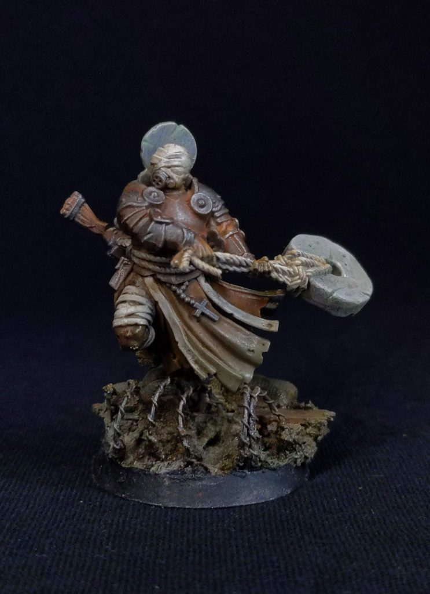
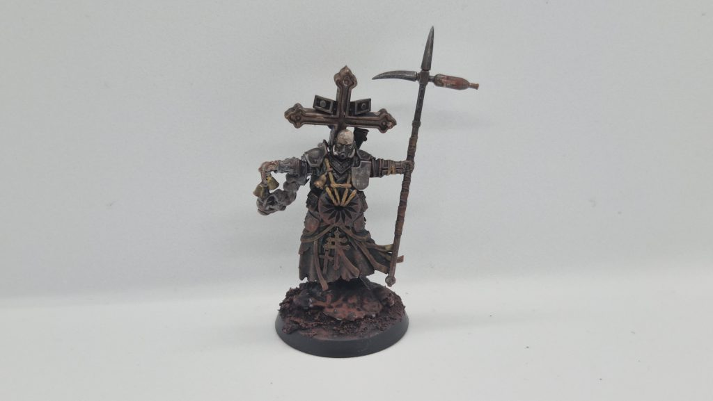
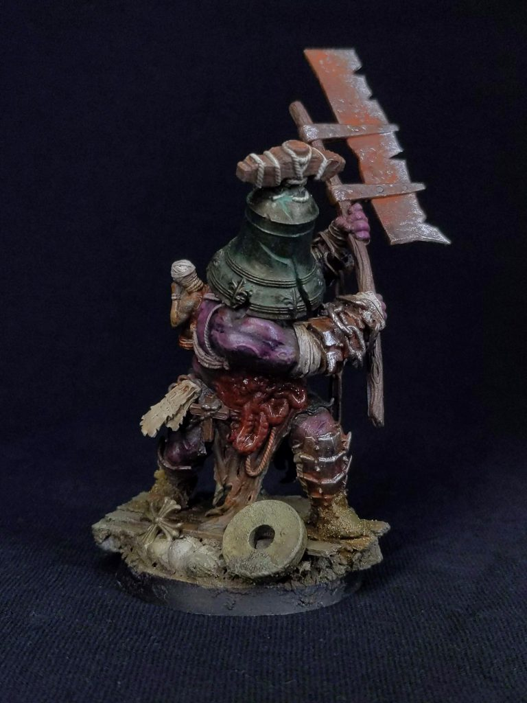
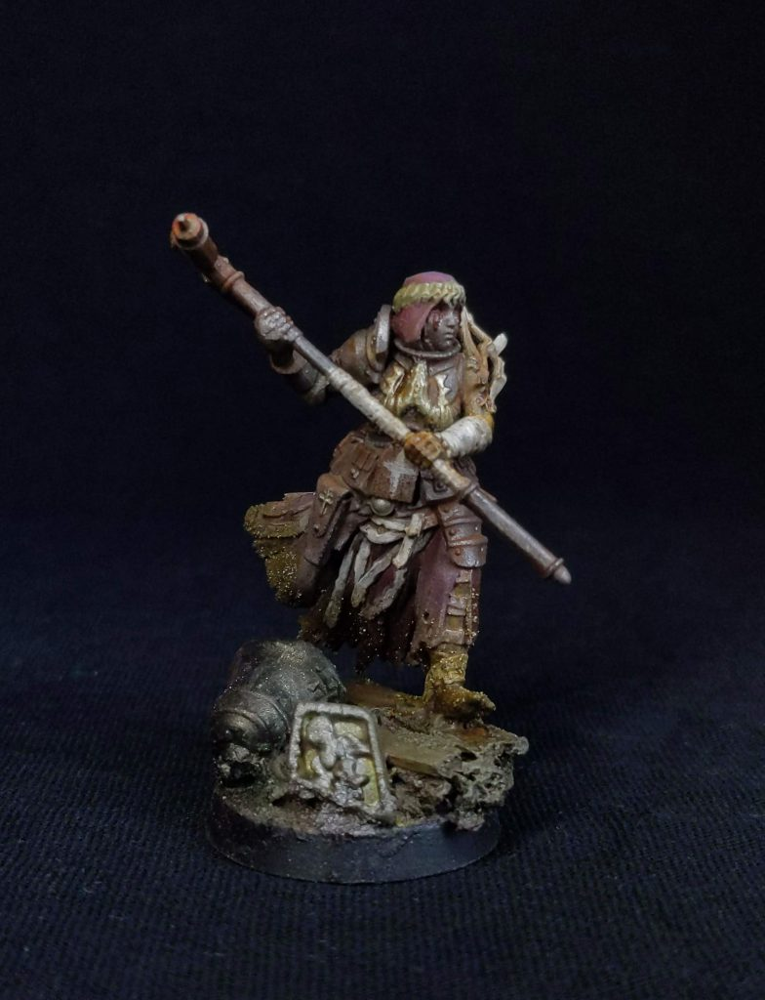
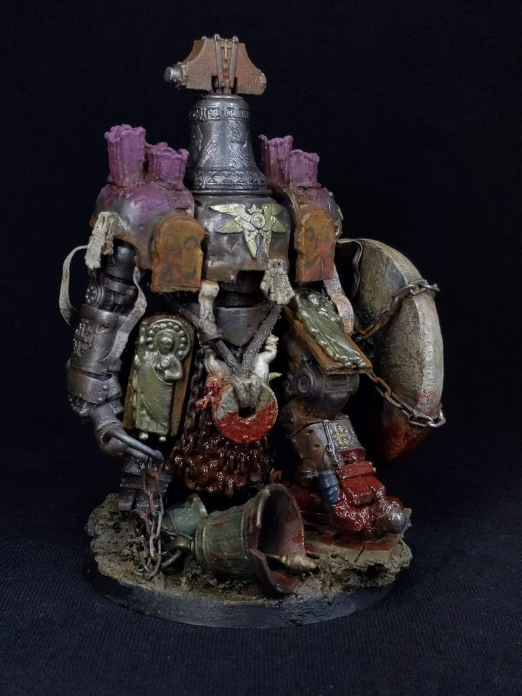

Trench Crusade Faction Focus: Procession of the Sacred Affliction
 Credit: Dandy
Credit: Dandy
Lore Primer
The earliest sacred processions date to the 13th Century and were little more than parades of dispossessed refugees, seeking new meaning and homes as the war had ravaged the land. At first, communities that saw these processions were scared and eagerly moved them on for fear of banditry. However, by 1303, the Church formally decreed that all Christians in good standing should neither impede these sacred processions nor withhold charity wherever possible. Not only had the Church given legitimacy to these processions, but the Knights of Saint Lazarus and the Order of the Blessed Virgin Mary of Mercy had also taken them under their protection and provided guidance.
The most significant event in the history of the Sacred Procession is that of its inception, when Solon and his most devout followers sealed their crippled and diseased bodies inside a tomb after being refused passage. After 7 days, the tomb was reopened, and Solon and his followers were not healed, but they were blessed by Mary herself and given vitality and favor to spread the word of their sacred gift from God. A stone was to be carried by them to show their endurance against the forces of Hell.
The Procession of the Sacred Affliction is blessed with righteous zeal, taking the fight to their enemies in brutal melee combat, deflecting bullets that would otherwise kill them, thanks to their rudimentary but blessed armour. The millstones they carry are used to kill their enemies, either through blunt force trauma or by drowning them in the water-logged battlefield they fight in.
On the Table
On the table, Sacred Affliction is the close-quarters combat specialist archetype squared, incurring restrictions on your Machine Gun and Punt Gun allowance in exchange for melee-focused abilities that turn them into the best melee faction in the game.
When it comes to special rules, we start off with Punishing Millstones, which grants an extra +1 Injury Dice for melee attacks when against a target that is Down. Wrath of God is an upgrade that can be given to either 1 Lazarist Castigator, Leper-Pilgrim or Martyr Penitent for 15 Ducats and means that no Blood Markers can ever be given to that model, as well as gaining the Negate Fear keyword. However, the downside is that you can not break this model on the Anchorite Shrine’s Catherine Wheel, nor can it have Ranged Weapons or Armour (except a Shield). Lastly, a model with this ability must be on a 32mm Base. Lastly, this faction can take any Faithful Mercenary that can be taken by the Trench Pilgrim warbands.

Leper Pilgrim. Credit: DandyFive Defining Traits of the Sacred Affliction
Durability
With access to armour that cannot be ignored, Martyrdom pills, as well as some Bodyguarding and healing shenanigans, you have a very durable force that is difficult for your opponent to chew through.
Melee Powerhouse
Swinging on the other side of the pendulum, the Procession of the Sacred Procession has access to some of the best melee in the game. Many of your models have positive modifiers to their melee attack characteristics, as well as access to some amazing weapons that can modify this further. The Flail is a cheap melee weapon that grants a simple +1 Dice to the Melee Success Roll, and the Great Flail adds a +1 to Injury Dice on top of that. The Anti-Tank Hammer has no Elite restriction, allowing your speedy Stigmatic Nuns to get up the board, take the Blood Marker after swinging, and potentially turn it into a Blessing Marker when it’s their turn again. Speaking of speed…
Movement Shenanigans
If fantastic defense and melee offense weren’t good enough, then how about some speedy units with some nice movement shenanigans? Not only does Sacred Affliction have some naturally speedy units, namely the Ecclesiastic Prisoner and the Stigmatic Nun, but you have access to Battlekit pieces that can indirectly increase your speed through bonuses to your Dash actions. A couple of these, namely the Bell of Warding and Ragged Vestments, allow you to spread out way more than beforehand, where you needed to huddle around your single musician, which left your enemy Artillery Witches salivating. Lastly, your Lazarist Prophet has the Loudspeakers ability, which can allow your units around the Prophet to make a free movement of up to 3”, even allowing them to end the movement in melee.
Limited Shooting
So far, Sacred Affliction is looking like a solid faction, but there are downsides. Having some great melee offense comes at the cost of poor ranged offense. Now, it’s not completely useless, but with just 1 Punt Gun and no access to other great long-range weapons, melee truly is your only real ally. You have some decent short-range weapons, such as the beloved Automatic Pistol, but by and large, your Ranged Weapons are there to soften up targets rather than deal the killing blow.
Pricey
So you’ve got solid units with some pretty stacked profiles, with some great Battlekit pieces to boot. The problem is that you can’t have it all (right away, at least). Premium units and premium gear come at a cost, after all. Your Elites, for instance, are slightly more expensive than those from other factions (and some are even more expensive than their Trench Pilgrim counterparts), and your game-winning gear comes with a Ducat value that makes you think twice before spamming it. Despite being nothing more than a metal rod with a bomb on the end, your Anti-Tank hammer is going to burn a hole in your pocket if you decide to rush them and max them out.
Units
Lazarist Prophet - 90 Ducats

Sacred Affliction War Priest - bre4d_The Lazarist Prophet may be your mandatory leader pick, but this profile will be the backbone of your warband, and rightfully so. With the typical +2D/+2D in melee and ranged seen for human leaders, the abilities are what really make the Lazarist Prophet stand out. First up, we have Memento Mori, which is your ability that keeps you on the battlefield longer. Whilst almost all leaders have the Tough keyword, the Lazarist Prophet’s Memento Mori is even more effective, completely ignoring the first Out of Action result, instead dropping it down to a Downed result. It seems being a Prophet of the Lord really pays off.
Lay on Hands is your healing ability. Although it lacks built-in bonus dice, it is, fortunately, a regular action. If successful, remove 1 Blood Marker from a friendly unit within 6”, including the Lazarist Prophet themself. Should you roll a Critical Success, you can remove 3 Blood Markers. Being able to remove chip damage or a large chunk of blood markers from your key units is invaluable. Stack this with a med kit to further increase your healing potential.Lastly, Loudspeakers is your bread and butter ability. After succeeding on a Risky Success Roll (with +2 Dice), all units within 8” may move towards any visible enemy unit 3” and end the movement as close as possible. If there is no visible enemy, the model may move normally. Let’s break this down and see some possible use cases. First off, an 8” range is very generous, and you’ll still have room to spread your units out without having to bundle your units and be susceptible to Blast weapons. Despite being a risky roll, the chance of succeeding in this without any interference from your opponents is highly likely and will be a staple in your Lazarist Prophet’s activation. If you succeed, not only are you getting that 3” of movement, but with clever positioning, you’re able to put allies back into cover or back into melee. The immediate use case for this ability is to gain an extra tick of movement and possibly make a charge easier. A failed charge means you still need to move, which means this ability can even be done after the charge is attempted. The added utility of this ability, however, lies in its synergy with shooting and charging. Because you can only shoot and charge with assault weapons, this ability actually bypasses those restrictions. The shenanigans that can be made with this ability cannot be understated. Melee, retreat, shoot, dash, and then use Loudspeakers to melee with another unit to keep yourself safe is a perfectly viable move. It makes the Lazarist Prophet particularly squirrelly and a tough nut to crack.
Lazarist Communicant - 100 Ducats

Credit: DandyCommunicants, having consumed the flesh of a Meta-Christ and drunk its blood, become jacked-out beatsticks that act as bodyguards for your essential units. Their ranged capabilities are nonexistent, given their ranged stat. They are, however, a melee powerhouse, with +2 Dice in melee and having access to the Strong keyword. It seems the Communicant has a face that only YWHW could love, as the Communicants cover their face and nail giant crosses into their eyeballs, or wear helms (a bell counts, right?) which acts as both an Iron Capirote and a Gas Mask (how that works, I don’t know), ensuring their melee output isn’t hindered against the big scary stuff (can’t be scared when you can’t see things, right?).
The Communicant also comes with Tough, and it will get a second lease of life after being taken Out of Action the first time. Couple this with the Regenerate 1 ability, which lets you remove one Blood Marker when this model activates, and you’ve got a very tanky front-line bruiser that wants to get into combat. Get a med kit on this unit as well to double the self-healing potential.
The final ability of the Communicant, Bodyguard, allows you to divert successful hits on other friendly units onto the Communicant instead. Being able to take injuries on your Communicant, to protect your other units, is going to be vital. Whilst you can bodyguard for any unit within 1”, keeping close to your War Prophet makes a very potent power pair. Your Communicant takes the hits, and your regeneration and War Prophet healing is going to provide a very frustrating party bus of pain that your opponent will somehow have to deal with.
An important change for this unit is the loss of Martyrdom Pills for the Communicant, so your Bodyguarding is going to be a little riskier!
Lazarist Castigator - 50 Ducats
 Lazarist Castigator. Credit: Dandy
Lazarist Castigator. Credit: Dandy
The Castigator is the shepherd that ensures the faithful stay, well, faithful and ensures that their sheep are ever moving forwards…even if it’s into enemy machine gun fire (sad baa noises). Their place on the table is that of God’s whip, ensuring His followers never stray, should they be foolish enough to try. With a +1 to Ranged and Melee, they are a proficient combatant as well as a support piece.
First up, we have Zealot Strength, a simple upgrade that grants the Castigator the Strong keyword at a +5 ducat cost. Getting this upgrade is highly recommended, as with this, the Castigator becomes your only unit with Strong and a positive ranged attack modifier, and with it, your ideal Punt Gun wielder. This turns them into a great mid-range threat and shores up your lack of ranged shooting (if only a little).
Enforced Orthodoxy ensures your forward momentum is never halted. After passing a risky action with +1 Dice, all friendly downed models within 8” can stand up without penalty. This is great even on just a couple of units. It is just a +1, so there is a chance it will fail, but it is worth it if you find yourself needing to use it.A much more niche ability is Whip of God, which allows you to hit friendly units in melee (the melee has -1 Injury Dice). If you take them out of action, you gain +1 Dice to any Morale tests that you may take. Right off the bat, taking out your own units sounds silly, and for the most part, it is, but there are some specific use cases. For example, if you’re about to take Morale away at the subsequent model loss, getting an extra +1 can make a difference, or you want to deny a big stack of juicy Blood Markers your Court of the Seven-Headed Serpent opponent intends to use. A particularly cheeky use case is to give the Castigator a melee weapon that hits reliably but offers no Injury Bonus and use that to hit your own Stigmatic Nun units. You should reliably give them just a Blood Marker, which they can then use to turn into a Blessing Marker instantly!
Leper-Pilgrims - 30 Ducats
 Leper Pilgrim. Credit: Dandy
Leper Pilgrim. Credit: Dandy
The main troop of the Sacred Affliction warband, which initially may seem unimpressive, can become potent with a few cheeky steps. They sport no bonuses to melee or range. However, they may be upgraded to have the Strong keyword thanks to the Zealot Strength ability, allowing another Punt Gun or Machine Gun user. Do keep in mind that you may have only three models with this ability at any one time, including your Lazarist Castigator. Still, definitely worth it!
The real strength of the Leper-Pilgrims lies in their demise (yes, you read that right). With the Resurrection ability, a Pilgrim who dies may be revived as a Martyr Penitent, giving them +1 Dice in melee, as well as a permanent -1 Dice to injury rolls for enemy attacks. Getting such a buff, while retaining the Pilgrim's existing equipment, is a great way to conserve resources.
Ecclesiastic Prisoner - 20 Ducats
 Sacred Affliction Ecclesiastic Prisoner - bre4d_
Sacred Affliction Ecclesiastic Prisoner - bre4d_
These are chaff of the warband, a job they take very seriously, being unable to wield any weapons, armour, or equipment at all, except for the Iron Capirote that is built into their cost or the Martyrdom Device (which is a fancy way of saying “bomb wrapped around them with rope). This makes them the cheapest chaff in the game, even compared to Wretched from the Court of the Seven-Headed Serpent. Prisoners are an efficient unit to break on the Catherine Wheel if you're short on ducats or playing a one-off game. Being unable to take any weapons doesn't stop them from making Melee attacks, though, but they do so at -1 Dice (so -2 in total, thanks to their own -1 Melee Characteristic). Despite that, they can also serve as inexpensive objective holders or to pad out your roster and prevent being out-activated.
As mentioned, Prisoners can be equipped with a Martyrdom Device that can be activated at any time. When done so, all models within 3” make an injury roll and models within 1” roll with a +1 Dice to the injury roll. Whilst this doesn't sound particularly lethal to those outside of 1", the Device does now have the Shrapnel keyword, meaning it can do more work on those who thought they were safe. However, given the fact that the bomb is strapped to your poor prisoner, they too must roll on the injury table, but roll 4d6 and add them all together. Should they survive by the grace of God, they resume as usual (although probably a little dumbfounded) and can be given another bomb before the next battle. Remember, what was once exceptional becomes the new normal in the Lord's workplace. If you're wondering how blowing yourself up helps your Morale, don't worry! The Awaited ability means that should the Prisoner take itself out of Action from the Martyrdom Device, then it does not count towards Morale checks. Lastly, the Martyrdom Device can be upgraded with the Minenhelm ability, which adds another +1 Injury Dice for models within 1" of the Prisoner, for a cost of 10 extra Ducats. The downside is that the Prisoner is automatically taken Out of Action as a consequence of such a lethal explosion.
Stigmatic Nuns - 60 Ducats

Stigmatic Nun. Credit: DandyGifted with the stigmata once suffered by the third Meta-Christ, Stigmatic Nuns carry their gift into battle, becoming more powerful the more damage they suffer. Bearing a +1 Dice in Melee and ranged as well as an increased movement characteristic of 8”, the Stigmatic Nuns are fast on their feet and are great models to reach out and take out the enemy. Despite having bonuses to Ranged attacks, Stigmatic Nuns may only take pistols, automatic pistols, and warcrosses (a kind of throwing star) as a grenade. So yes, Nunjas are real, and you should be afraid. Very afraid.
Agile allows Stigmatic Nuns to move across the battlefield quickly, enabling them to jump, climb, and, most importantly, dash more successfully. They also gain a bonus to diving charge actions, allowing them to charge from up high and gain even more bonuses to the following melee attack.Blessed Stigmata is the Nuns' key ability, providing both strong offensive and defensive consistency. At the start of each activation, the Nun may turn one Blood Marker they have on them into a Blessing Marker instead. It can’t be overstated how great it is to turn a potential negative modifier into a positive one.
Stigmatic Nuns will be the bread and butter in many lists. The trio of ranged, melee, and movement really helps you adapt to your opponent, scenario, and board situation. They can use multiple weapon options, with the Flail & off-hand Trench Club being a good foundation; if you hate having friends, give them the Anti-Tank hammer.
Anchorite Shrine

Kitbashed Sacred Affliction Anshorite Shrine. Credit: DandyThe hulking behemoth that is the Anchorite Shrine is the last unit in the Sacred Affliction retinue, but it is certainly not the smallest. The Weird War I mecha-dreadnaught houses a monk within it, in constant torment due to the innumerable hooks and blades encased within it.
Kitted out with a Catherine Wheel and a Bonebreaker Mace built into its profile, this model has one job, and one job only. Get in melee and cause utter mayhem. Forgoing any ranged capabilities, it does have a +2 Dice in Melee, making it incredibly lethal. This does mean that it will draw all the ranged fire your enemy can muster, but luckily, the Shrine rocks a built-in -3 armour, Negate Shrapnel, as well as having Tough, as well as another cheeky little mini-tough ability called Broken on the Wheel. Let’s take a look:
Before the battle, you can choose one of your Leper-Pilgrims or Prisoners, remove all equipment, and place them on the wheel. This grants you a mini-tough, in which all attacks are directed at the model on the wheel. That means that there won’t be the benefit of armour, or Negate Shrapnel, as the broken model does not benefit from that, but the bonus is that, as long as the model is still on the wheel, all downed results become minor hits instead. If that wasn’t spicy enough, the first Out of Action result is instead treated as a No Effect result. Should that happen, remove all Blood Markers from the Shrine, and the previous special rules no longer apply, signifying the death of the sacrificed Prisoner or Pilgrim.
The Catherine Wheel is also the primary weapon of the Shrine, allowing not only a +1 Dice to the attack roll (so rolling a +3 overall), but also granting a 3d6 injury roll, adding all the dice together to get your result. This is huge and a major reason the Shrine is so rightfully feared at the table. Should anything be silly enough to survive, then you can also attack with the Bonebreaker Mace, which does count as an off-hand attack (so -1 Dice), but grants +1 Dice to injury rolls. Rounding it out, the Shrine also causes Fear, making it a little more durable.
One thing of note, however, is that this model, given its size, sits on a 60mm base. This means it will be harder to maneuver in more tightly packed battlefields.
Key Equipment
Bells of Warding: 2 Glory, Elite Only, Limit:1
The Bells of Warding act similarly to a Musical Instrument, by granting those within 4” of the bearer a +1 die to Dash actions. Do note, however, that this does not grant a double bonus if you are within this aura and the Musical Instrument aura. A useful Keyword tucked away in this item is the Leader keyword, meaning you'll benefit from this too when it comes to Morale.
Blessed Millstone: 5 Ducats, Leper-Pilgrims only, Limit: 2
This is a really interesting piece of kit that interacts with your Movement Characteristic and also the Punishing Millstone special rule. A model with this equipped reduces their movement by 1”, but increases the effect of the Punishing Millstone special rule by another +1 Injury Dice (this means a +3 Injury Dice when using a Melee Attack against a downed enemy). So far so good. Should you take an enemy out of Action, you may regain your full movement, with an additional +1” of movement, and return the Punishing Millstone rule back to normal. At the end of a battle, you can return the Blessed Millstone to the initial bearer or a different model.
Great Flail / Scourge: 15 Ducats, Limit: 3
A 2-handed version of the Flail / Scourge, and grants the +1 Dice we know from the flail, but also an added +1 Injury Dice. Like the regular flail, this is a nice, cheap way to boost your damage. The downside is that this weapon has both Cumbersome and Heavy keywords.
Holy Icon Armour: 30 Ducats
This armour is certainly pricey, but the -1 Injury Modifier along with the Impervious keyword certainly ensures that the bearer of this armour is protected.
Penitent’s Phylactery: 12 Ducats, Limit 2
When a model that has this piece of Equipment on it makes a Melee Attack that targets a model with the Heretic, the Court or Black Grail keyword, you place 1 Extra Blood Marker on them after making the Injury Roll. A Blood Marker is placed even if the Injury Roll has No Effect. It's a great piece to have when, but is entirely dependent on your playgroup on how viable it is.
Dandy: Personally, I'm not entirely sold on items that do more against certain factions. It can create some bad feelings in groups. I understand the whole narrative reason, but I am much more of a fan of keeping the narrative in the back seat when the narrative rule hinders an opponent on the table.Punt Gun: 30 Ducats, Limit 1
Did you know that historically, a Punt Gun is a 10-foot-long shotgun that was used to kill…ducks? Okay, it was used to kill A LOT of them. In the world of Trench Crusade, the Trench Pilgrims must have taken inspiration from this "fowl” weapon and brought it to the front lines, but instead of ducks, it’s demons. However, we can’t rule out the possibility that demonic ducks are in the setting (they seem like the most likely bird to succumb to Satan: those or Geese).
With the Shrapnel keyword, the gun also provides a +1 Dice to both attack and Injury rolls. The Punt Gun also comes with the Shotgun keyword, meaning it is mostly a reliable damage-dealing ranged weapon when shooting within 9” (the max range being 18”). The gun can be overcharged to provide a Blast 3” as well, with the downside that the attack ends the model’s activation and gives them a Blood Marker. However, only models that are base-to-base with another model or have the Strong keyword may overcharge the weapon. That immediately restricts who can take this, typically to a Castigator or a regular Pilgrim with the Zealot strength upgrade.
Ragged Vestments: 10 Ducats
A simple piece of Armour that provides no Injury Dice modifiers, but instead grants a +1 Dice to Risky Success Rolls when the bearer makes a Dash Action. However, you cannot have a Shield or a Weapon with the Heavy keyword. Great for Stigmatic Nuns, who like to skirt on the board edge and take out weaker targets where possible.
Warcross: 5 Ducats
A simple ranged option that costs just five Ducats and ignores the penalty for long range. At an 8” range, it’s not going to be tapping people from far away, but as it has the Assault keyword, you can throw it and then still charge.
Interestingly, just like a grenade weapon, it does not stop you from taking another ranged weapon (although you can’t take this and a grenade). You can take a ranged weapon that shoots farther if you so desire.
Wow, that’s a lot of movement-based Battlekit pieces. Having an extra Musician like +1 Dice to Dash action bubble is certainly welcome, but at a glory cost, it adds a decision as to whether to grab it or a Mercenary. I do like Ragged Vestments, however, which can go well on your Nuns, to really secure success in your Dash Actions, although 10 Ducats is a high price to pay in the end. The Heavy Flail is a nice piece of kit for the price, and Penitent’s Phylactery is an instant buy for campaign groups that have a fair amount of Heretic Factions in them.
Variants
The Knights of Saint Lazarus
 Kitbashed Leper-Knights. Credit: Dandy
Kitbashed Leper-Knights. Credit: Dandy
The Knights of Saint Lazarus had operated long before their official recognition in 1255, focusing on aiding those afflicted with leprosy (though this later extended to a broader sense of charity). Warbands of these “Leper-Knights” can be seen across many battlefronts; their skill in warfare is rarely outmatched. Their chivalric and honourable code has lasted up until the modern era, where they forbid the use of long-range weaponry, deeming it cowardly and entirely un-Christian.
If you thought the standard Sacred Affliction faction was the king of melee, then let me tell you that we have something else that takes the crown. Focused on Stigmatic Nuns and “Leper-Knights”, warriors in this warband forgo the luxury of long-range (and even mid-range) combat in favor of brutal melee, are able to heal, and even receive blessings after killing an enemy.
When it comes to special rules, we start off with Sacred Code, which stipulates that this warband must include 1-6 Stigmatic Nuns. Additionally, you may not take any Lazarist Communicants or Lazarist Castigators. Lastly, members of this warband cannot voluntarily make a Retreat Action. So right off, more Nuns are always welcome! They are certainly on the pricier side in the early campaign games, so the cap increase to 6 isn’t that significant, but in later games, an extra couple of Nuns will really increase your threat potential. However, losing the Communicant and Castigator is certainly a negative, but fret not, there is a new melee player in this variant. The Knighthly Order special rule allows us to take 1-3 Leper-Knights. This unit uses the Lazairst Castigaor as its base warband entry. However, Leper-Knights must take armour, but have a Melee Characteristic of +2 Dice. Their Whip of God abilities are replaced with Knightly Code, which allows a Knight to remove a Blood Marker from themselves, or a friendly model within 3” each time they take an enemy model Out of Action. If the model were an Elite, you could instead choose to place a Blessing Marker beside the Knight. The Whip of God ability was always a situational ability, and I think Factory Fortress swapping this ability specifically shows they are aware of that. Personally, I am so excited to run a bunch of Leper-Knights, stacked to the teeth with equipment and Zealot Strength, charging up the board. Speaking of equipment, the Blessed Armoury rule reduces the cost of Automatic Pistols to 15 Ducats and Great Swords to 7. Additionally, models in this warband cannot have any Ranged Weapon with a greater cost than 15 Ducats, or any Ranged Weapon that costs Glory. So say bye-bye to your last Punt Gun! Whilst the Punt Gun has been a staple of the Trench Pilgrim and Sacred Affliction identity, the tools you have to get up the board quickly, as well as a reduced Automatic Pistol cost, are enough to take the sting out of losing out on it. What does particularly hurt, though, is the lack of Flamerthrowers. This is going to eat into your Armour-Piercing capabilities, and despite cheaper Auto Pistols and Great Swords, is it enough to put a dent in lists that love their armor? Only time will tell, but your Melee units have to pump out a lot. Lastly, when it comes to campaigns, a Knights of Saint Lazarus warband may choose a Temporal Lord as their Patron if they wish to do so, which you may want to do so, as the Temporal Lord can offer some great discounted battlekits, further pushing down the cost of your amazing kit (a 10 Ducat Great Flail is nuts). The Mendalist Chemicals & the Special Assault Training abilities are also fantastic Skills to gain for almost any of your models. All in all Temporal Lord makes for a great pick with this warband!
Dandy: I am absolutely in love with this variant. I’ve always loved the way Sacred Affliction plays, and this just takes things to the next level. Whilst the Castigator is a great model in its own right, I have personally found it difficult to get the most out of Whip of God, so changing that rule to have broader utility is fantastic, and really synergises with the Prophet, whilst also making up for the lack of Communicant. I can foresee this warband being a menace when the ball starts rolling and gains momentum. A squad of Leper-Knights and fast Stigmatic nuns is going to be a lot for many to deal with, but I am all for it!Last for this Variant: Free STLs will be provided for a multi-pose Leper-Knight, so you can represent the Knights immediately. Unless you are me, and kitbashed them asap.
Procession of the Blessed Flock
If you were a little miffed at the loss of the Communicant from the Knights of Saint Lazarus, well, what about a Flock of them! Due to the sheer brutality of the war, there are hundreds, if not thousands, scattered across the battlefields across the Levant. The Lazarist Castigators search among the corpses and rubble to find those who have survived the carnage. Given the regenerative blessings of the Communicants, they are often found alive, but often not of sound mind. The Lazarist Castigators guide the Communicants, forming Processions from those they have found. Along with this, these Processions find themselves accumulating more Ecclesiastic Prisoners than usual.
Starting off with the special rules, we have Shepherds and Lambs, which, on the plus side, allows you to bring 1-3 Lazarist Castigators and 1-6 Lazarist Communicants, with the added stipulation that you must have 1 Castigator for every 2 Communicants. The downside here is that your Communicants lack the Elite keyword. Furthering the Castigator and Communicant relationship is Guidance, which forces your Communicants to stay close to your Castigators. Should a Communicant activate whilst outside of 6” of a Castigator, all Success Rolls are treated as Risky Success Rolls. This sounds punishing at first, but realise that a Communicant wants to do 2 things: Dash and bonk heads. Your Dash is already Risky, and unless you plan on retreating after doing a Melee Attack / have an off-hand weapon, then having a Risky Success Roll for your Melee is not that big of a deal.
What is a downside, though, is Disheveled Procession, which reduces the cap for Stigmatic Nuns to 0-2, and, more harshly, you cannot include any Shrine Anchorites or Leper-Pilgrims. The silver lining here is that it means your 3 Castigators all get to have Zealot Strength, should you choose to do so.
It’s time to kit out your Prisoners with the Flagellant Flock special rule, as with this rule, your Prisoners have a Ranged Characteristic of -1 Dice. Additionally, your Prisoners can purchase Muskets, Blunderbusses, Warcrosses, Flails, Ragged Vestments and Trench Shields. Lastly, this warband may not have Automatic Pistols, Semi-Automatic Rifles, Sniper Rifles, Submachine Guns, Incendiary Grenades or Reinforced Armour due to the Scavenged Armoury special rule.
Dandy: I dig the design around this variant and the imagery of Castigators whipping both these hulking beasts and broken, ravaged prisoners seeking redemption. This juxtaposition in power between these two units is interesting to explore, and I’ll certainly be giving The Blessed Flock a few tries. It’ll be interesting to see the effect of Guidance and the lack of Elite on the Communicants, but let's keep in mind that they can Bodyguard each other, so there are shenanigans you can achieve, meaning you can spread out your wounds and recover them easily with Regeneration. At the end of the day, Communicants have Tough, and seeing a tide of 6 Communicants running up the board would be beautiful to see. It would just hurt the bank if you started losing them post-game.This variant is going to make the most of your new movement-based Battlekit pieces, as you really need to get up into the enemy's face as quickly as possible, as the lack of long-range weaponry, Auto Pistols and Reinforced Armour is going to be punishing otherwise.
List
So, for this list, I wanted to include as many changes as I could whilst staying true to a Sacred Affliction list. It’s low on Activations, but we can kit out our Elites with 2 Auto Pistols and a Molotov cocktail, as well as a two-handed Melee Weapon. This means we can ensure that our Elites contribute as much as possible. Alongside our Elite triad, we have the behemoth that is the Anchorite Shrine, creating another major problem for your opponent. Depending on your opponent's list, you can sacrifice one of the two prisoners onto the wheel, but regardless, with a single prisoner and a Stigmatic Nun, you can get up the board quickly and capture some objectives early. The Nun, in particular, is able to get up the board on the side if needed, with the Ragged Vestments adding some consistency in your Dash rolls. Rounding it all out, you have a standard Musician with Pistol to contribute in Melee or Ranged if needed.
It's not the ideal list by any means, and it's going to suffer into Armoured enemies, but it shows off a few of the changes into a thematic list.
Final Thoughts
So here it is! One of the first past Variants that has been fleshed out into its own Faction. As someone who has loved the Sacred Affliction since the beginning, I love the new Battlekit options, as well as the new Variants. I do think that Ragged Vestments and the Bell of Warding, allowing the faction to spread out and use them to gain those consistent dashes, are quite the boost in efficiency. Sacred Affliction has always had the shotgun barrel of balancing aimed at them, as the core fundamentals have been based on a strong defense to incoming attacks and strong melee offense, which can always be rather obtuse for opponents to deal with. Now we’re adding in more consistent movement, and I wonder if the almost non-existent ranged threat from the variants is enough to dampen a faction that can swiftly move up the board and do what it does best.
Speaking of the Variants, I have to say that I am impressed by the way Factory Fortress has expanded the Sacred Affliction Identity even further with two added variants. Both the Knights of Lazarus and the Blessed Flock have taken two distinct aspects of the core Faction and created something unique within the Faction's overall framework. I think it points to the potential in all the other variants out there and what Factory Fortress can do to expand upon them.
Have any questions or feedback? Drop us a note in the comments below or email us at contact@tabletopbattles.com. Want articles like this linked in your inbox every Monday morning? Sign up for our newsletter. And don't forget that you can support us on Patreon for backer rewards like early video content, Administratum access, an ad-free experience on our website, and subscriber-only content covering competitive Warhammer 40K!Originally published on Goonhammer.


Leave a Comment